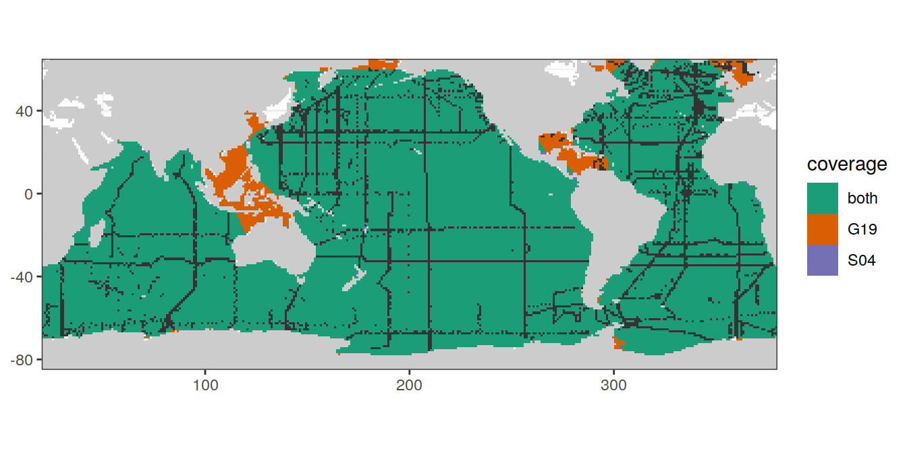
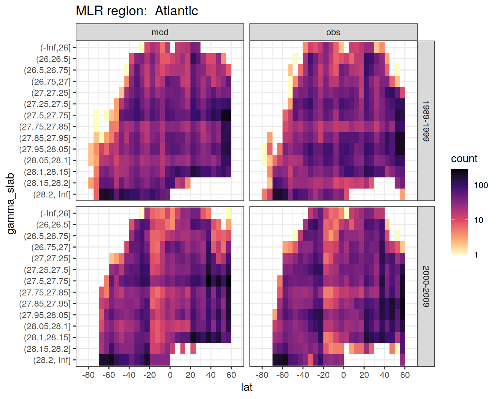
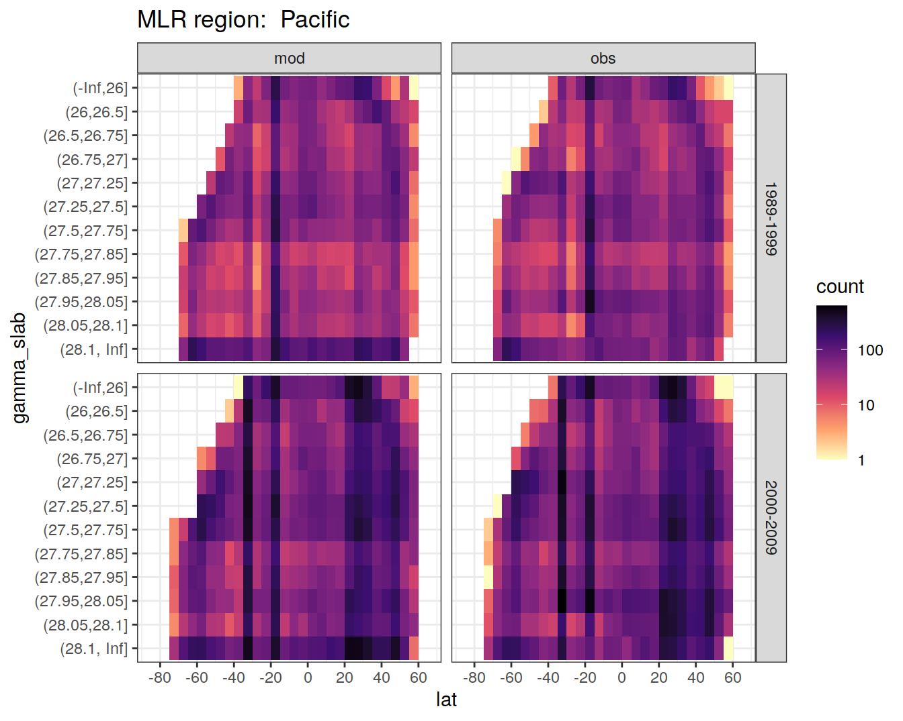
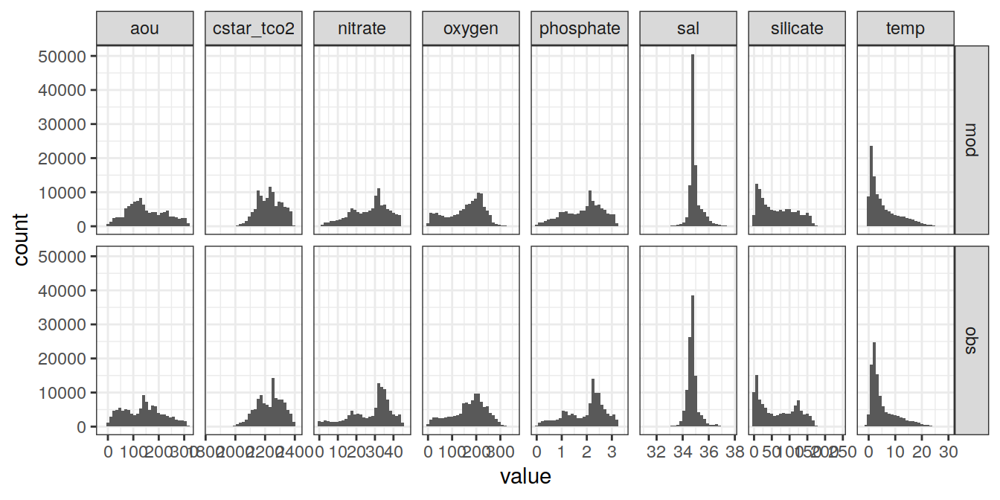
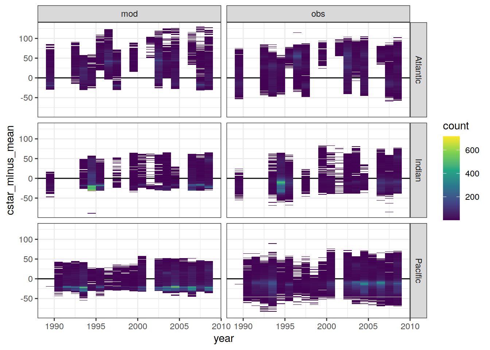
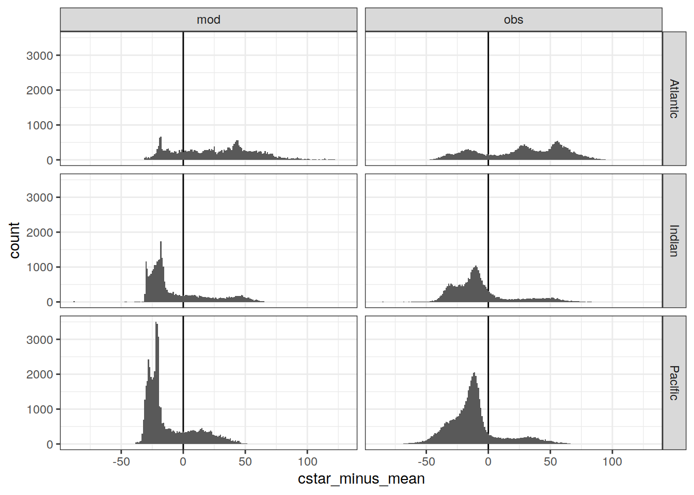

eMLR data preparation
Jens Daniel Müller
16 April, 2021
Last updated: 2021-04-16
Checks: 7 0
Knit directory: emlr_obs_v_XXX/
This reproducible R Markdown analysis was created with workflowr (version 1.6.2). The Checks tab describes the reproducibility checks that were applied when the results were created. The Past versions tab lists the development history.
Great! Since the R Markdown file has been committed to the Git repository, you know the exact version of the code that produced these results.
Great job! The global environment was empty. Objects defined in the global environment can affect the analysis in your R Markdown file in unknown ways. For reproduciblity it’s best to always run the code in an empty environment.
The command set.seed(20200707) was run prior to running the code in the R Markdown file. Setting a seed ensures that any results that rely on randomness, e.g. subsampling or permutations, are reproducible.
Great job! Recording the operating system, R version, and package versions is critical for reproducibility.
Nice! There were no cached chunks for this analysis, so you can be confident that you successfully produced the results during this run.
Great job! Using relative paths to the files within your workflowr project makes it easier to run your code on other machines.
Great! You are using Git for version control. Tracking code development and connecting the code version to the results is critical for reproducibility.
The results in this page were generated with repository version 0b33708. See the Past versions tab to see a history of the changes made to the R Markdown and HTML files.
Note that you need to be careful to ensure that all relevant files for the analysis have been committed to Git prior to generating the results (you can use wflow_publish or wflow_git_commit). workflowr only checks the R Markdown file, but you know if there are other scripts or data files that it depends on. Below is the status of the Git repository when the results were generated:
Ignored files:
Ignored: .Rhistory
Ignored: .Rproj.user/
Unstaged changes:
Modified: code/Workflowr_project_managment.R
Modified: data/auxillary/params_local.rds
Note that any generated files, e.g. HTML, png, CSS, etc., are not included in this status report because it is ok for generated content to have uncommitted changes.
These are the previous versions of the repository in which changes were made to the R Markdown (analysis/eMLR_data_preparation.Rmd) and HTML (docs/eMLR_data_preparation.html) files. If you’ve configured a remote Git repository (see ?wflow_git_remote), click on the hyperlinks in the table below to view the files as they were in that past version.
| File | Version | Author | Date | Message |
|---|---|---|---|---|
| html | ddec5b7 | jens-daniel-mueller | 2021-04-15 | Build site. |
| html | 29edae5 | jens-daniel-mueller | 2021-04-14 | Build site. |
| html | 099d566 | jens-daniel-mueller | 2021-04-14 | Build site. |
| html | bb44686 | jens-daniel-mueller | 2021-04-14 | Build site. |
| html | bf40480 | jens-daniel-mueller | 2021-04-13 | Build site. |
| html | 9f31fe3 | jens-daniel-mueller | 2021-04-13 | Build site. |
| Rmd | 80e1ee3 | jens-daniel-mueller | 2021-04-13 | rerun post-2000 with model data |
| html | c98be84 | jens-daniel-mueller | 2021-04-13 | Build site. |
| Rmd | 1df2496 | jens-daniel-mueller | 2021-04-13 | included model data |
| html | 338dd3c | jens-daniel-mueller | 2021-04-09 | Build site. |
| html | a79ca2c | jens-daniel-mueller | 2021-04-09 | included model data |
| html | be095c6 | jens-daniel-mueller | 2021-04-09 | Build site. |
| Rmd | 1c2bdb7 | jens-daniel-mueller | 2021-04-09 | included model data |
| html | 7831fd3 | jens-daniel-mueller | 2021-04-09 | Build site. |
| html | 20b26d4 | jens-daniel-mueller | 2021-04-08 | Build site. |
| html | c0895f8 | jens-daniel-mueller | 2021-04-07 | Build site. |
| html | 156d5b7 | jens-daniel-mueller | 2021-04-07 | Build site. |
| html | eb827c9 | jens-daniel-mueller | 2021-04-07 | Build site. |
| Rmd | 49be8ed | jens-daniel-mueller | 2021-03-26 | included model data |
| html | 857bad3 | jens-daniel-mueller | 2021-03-24 | Build site. |
| Rmd | 02e91d4 | jens-daniel-mueller | 2021-03-24 | included model data |
| html | 03b6009 | jens-daniel-mueller | 2021-03-23 | removed before copying template |
| html | 555750f | jens-daniel-mueller | 2021-03-23 | Build site. |
| Rmd | 2021931 | jens-daniel-mueller | 2021-03-23 | restriction to two eras and new definition procedure |
| html | f155edd | jens-daniel-mueller | 2021-03-23 | Build site. |
| Rmd | 6601b92 | jens-daniel-mueller | 2021-03-23 | rerun w/o post 2012 era |
| html | 380d215 | jens-daniel-mueller | 2021-03-21 | Build site. |
| html | 33b385b | jens-daniel-mueller | 2021-03-20 | Build site. |
| html | 330dcd0 | jens-daniel-mueller | 2021-03-20 | Build site. |
| html | 83a13de | jens-daniel-mueller | 2021-03-20 | Build site. |
| html | cf98c6d | jens-daniel-mueller | 2021-03-16 | Build site. |
| html | a1d52ff | jens-daniel-mueller | 2021-03-15 | Build site. |
| html | 0bade3b | jens-daniel-mueller | 2021-03-15 | Build site. |
| html | 27c1f4b | jens-daniel-mueller | 2021-03-14 | Build site. |
| html | af75ebf | jens-daniel-mueller | 2021-03-14 | Build site. |
| Rmd | e3dde84 | jens-daniel-mueller | 2021-03-14 | test without filtering |
| html | 5017709 | jens-daniel-mueller | 2021-03-11 | Build site. |
| Rmd | 7a953b4 | jens-daniel-mueller | 2021-03-11 | test with weak filtering |
| html | 585b07f | jens-daniel-mueller | 2021-03-11 | Build site. |
| Rmd | f568b8e | jens-daniel-mueller | 2021-03-11 | cleaned cstar filtering |
| html | 6482ed7 | jens-daniel-mueller | 2021-03-11 | Build site. |
| html | 85a5ed2 | jens-daniel-mueller | 2021-03-10 | Build site. |
| Rmd | 749b5db | jens-daniel-mueller | 2021-03-10 | filter based on comparison to CANYON-B |
| html | 081a12a | jens-daniel-mueller | 2021-03-06 | Build site. |
| Rmd | dafd78e | jens-daniel-mueller | 2021-03-06 | Canyon-B comparison for singla and all years |
| html | dd2b3a1 | jens-daniel-mueller | 2021-03-06 | Build site. |
| Rmd | bc38fd4 | jens-daniel-mueller | 2021-03-06 | Canyon-B comparison for singla and all years |
| html | 1dc27ab | jens-daniel-mueller | 2021-03-06 | Build site. |
| Rmd | 8abeada | jens-daniel-mueller | 2021-03-06 | Canyon-B comparison for singla and all years |
| html | e59c7c3 | jens-daniel-mueller | 2021-03-06 | Build site. |
| Rmd | c3e762b | jens-daniel-mueller | 2021-03-06 | Canyon-B comparison for all years together |
| html | 98fb407 | jens-daniel-mueller | 2021-03-06 | Build site. |
| Rmd | bd24d69 | jens-daniel-mueller | 2021-03-06 | Canyon-B comparison for all years |
| html | c71fdae | jens-daniel-mueller | 2021-03-05 | Build site. |
| Rmd | 8a40d10 | jens-daniel-mueller | 2021-03-05 | Canyon-B comparison for all years |
| html | 00688a1 | jens-daniel-mueller | 2021-03-05 | Build site. |
| Rmd | a805084 | jens-daniel-mueller | 2021-03-05 | comparison to CANYON-B started |
| html | 6c0bec6 | jens-daniel-mueller | 2021-03-05 | Build site. |
| Rmd | 559dd52 | jens-daniel-mueller | 2021-03-05 | rebuild with cruise rmse < 10 filter |
| html | 3c2ec33 | jens-daniel-mueller | 2021-03-05 | Build site. |
| Rmd | 006c875 | jens-daniel-mueller | 2021-03-05 | rebuild with NA in Cant replaced by 0 |
| html | af70b94 | jens-daniel-mueller | 2021-03-04 | Build site. |
| Rmd | c9cf1fd | jens-daniel-mueller | 2021-03-04 | rebuild with NA in Cant replaced by 0 |
| html | 86406d5 | jens-daniel-mueller | 2021-02-24 | Build site. |
| html | 3d3b4cc | jens-daniel-mueller | 2021-02-23 | Build site. |
| html | 7b672f7 | jens-daniel-mueller | 2021-01-11 | Build site. |
| html | 33ba23c | jens-daniel-mueller | 2021-01-07 | Build site. |
| html | 318609d | jens-daniel-mueller | 2020-12-23 | adapted more variable predictor selection |
| html | 9d0b2d0 | jens-daniel-mueller | 2020-12-23 | Build site. |
| Rmd | a4531df | jens-daniel-mueller | 2020-12-23 | test 106 |
| html | 0aa2b50 | jens-daniel-mueller | 2020-12-23 | remove html before duplication |
| html | 39113c3 | jens-daniel-mueller | 2020-12-23 | Build site. |
| Rmd | bef9220 | jens-daniel-mueller | 2020-12-23 | rebuild before sensitivity test |
| html | 2886da0 | jens-daniel-mueller | 2020-12-19 | Build site. |
| html | 02f0ee9 | jens-daniel-mueller | 2020-12-18 | cleaned up for copying template |
| html | 965dba3 | jens-daniel-mueller | 2020-12-18 | Build site. |
| html | 5d452fe | jens-daniel-mueller | 2020-12-18 | Build site. |
| Rmd | ca65bf5 | jens-daniel-mueller | 2020-12-18 | rebuild after final cleaning |
| html | 7bcb4eb | jens-daniel-mueller | 2020-12-18 | Build site. |
| Rmd | cd02e63 | jens-daniel-mueller | 2020-12-18 | rebuild with new reference year adjustment |
| html | d397028 | jens-daniel-mueller | 2020-12-18 | Build site. |
| html | 7131186 | jens-daniel-mueller | 2020-12-17 | Build site. |
| html | 22b07fb | jens-daniel-mueller | 2020-12-17 | Build site. |
| html | f3a708f | jens-daniel-mueller | 2020-12-17 | Build site. |
| html | e4ca289 | jens-daniel-mueller | 2020-12-16 | Build site. |
| html | 158fe26 | jens-daniel-mueller | 2020-12-15 | Build site. |
| Rmd | 449195a | jens-daniel-mueller | 2020-12-15 | rebuild without subsetting nitrate |
| html | 7a9a4cb | jens-daniel-mueller | 2020-12-15 | Build site. |
| Rmd | d234226 | jens-daniel-mueller | 2020-12-15 | rebuild with cstar_tref |
| html | 61b263c | jens-daniel-mueller | 2020-12-15 | Build site. |
| html | 4d612dd | jens-daniel-mueller | 2020-12-15 | Build site. |
| Rmd | e7e5ff1 | jens-daniel-mueller | 2020-12-15 | rebuild with eMLR target variable selection |
| html | 953caf3 | jens-daniel-mueller | 2020-12-15 | Build site. |
| html | 42daf5c | jens-daniel-mueller | 2020-12-14 | Build site. |
| Rmd | 923aa7f | jens-daniel-mueller | 2020-12-14 | rebuild with new path and auto folder creation |
| html | 984697e | jens-daniel-mueller | 2020-12-12 | Build site. |
| html | 3ebff89 | jens-daniel-mueller | 2020-12-12 | Build site. |
| html | 7d82772 | jens-daniel-mueller | 2020-12-11 | Build site. |
| Rmd | 6069c23 | jens-daniel-mueller | 2020-12-11 | selectable basinmask, try 5 |
| html | 7788175 | jens-daniel-mueller | 2020-12-09 | Build site. |
| Rmd | 64b795c | jens-daniel-mueller | 2020-12-09 | added histograms after data preparation |
| html | b01a367 | jens-daniel-mueller | 2020-12-09 | Build site. |
| html | 24a632f | jens-daniel-mueller | 2020-12-07 | Build site. |
| html | 92dca91 | jens-daniel-mueller | 2020-12-07 | Build site. |
| html | 6a8004b | jens-daniel-mueller | 2020-12-07 | Build site. |
| html | 70bf1a5 | jens-daniel-mueller | 2020-12-07 | Build site. |
| html | 7555355 | jens-daniel-mueller | 2020-12-07 | Build site. |
| html | 143d6fa | jens-daniel-mueller | 2020-12-07 | Build site. |
| html | 3c8a83c | jens-daniel-mueller | 2020-12-04 | Build site. |
| Rmd | e11f455 | jens-daniel-mueller | 2020-12-04 | improved output plots by using stat_2d instead of points |
| html | abc6818 | jens-daniel-mueller | 2020-12-03 | Build site. |
| Rmd | 992ba15 | jens-daniel-mueller | 2020-12-03 | rebuild with variable inventory depth |
| html | 090e4d5 | jens-daniel-mueller | 2020-12-02 | Build site. |
| Rmd | c98d27b | jens-daniel-mueller | 2020-12-02 | cleaned subsetting and data preparation |
| html | 37e9dac | jens-daniel-mueller | 2020-12-02 | Build site. |
| Rmd | 9ff071b | jens-daniel-mueller | 2020-12-02 | minor improvement of tref adejustment, formatting |
| html | 7c25f7a | jens-daniel-mueller | 2020-12-02 | Build site. |
| html | ec8dc38 | jens-daniel-mueller | 2020-12-02 | Build site. |
| html | c987de1 | jens-daniel-mueller | 2020-12-02 | Build site. |
| html | f8358f8 | jens-daniel-mueller | 2020-12-02 | Build site. |
| html | b03ddb8 | jens-daniel-mueller | 2020-12-02 | Build site. |
| Rmd | 9183e8f | jens-daniel-mueller | 2020-12-02 | revised assignment of era to eras |
| html | 22d0127 | jens-daniel-mueller | 2020-12-01 | Build site. |
| html | 0ff728b | jens-daniel-mueller | 2020-12-01 | Build site. |
| html | b02b7a4 | jens-daniel-mueller | 2020-12-01 | Build site. |
| Rmd | 60bea48 | jens-daniel-mueller | 2020-12-01 | auto eras naming |
| html | cf19652 | jens-daniel-mueller | 2020-11-30 | Build site. |
| Rmd | 2842970 | jens-daniel-mueller | 2020-11-30 | cleaned for eMLR part only |
| html | 196be51 | jens-daniel-mueller | 2020-11-30 | Build site. |
| Rmd | 7a4b015 | jens-daniel-mueller | 2020-11-30 | first rebuild on ETH server |
| Rmd | bc61ce3 | Jens Müller | 2020-11-30 | Initial commit |
| html | bc61ce3 | Jens Müller | 2020-11-30 | Initial commit |
1 Required data
Required are:
- GLODAPv2.2020
- cleaned data file
- Cant from Sabine 2004 (S04)
- Cant from Gruber 2019 (G19)
- annual mean atmospheric pCO2
GLODAP <-
read_csv(paste(path_version_data,
"GLODAPv2.2020_clean.csv",
sep = ""))
S04_cant_3d <-
read_csv(paste(path_preprocessing,
"S04_cant_3d.csv",
sep = ""))
G19_cant_3d <-
read_csv(paste(path_preprocessing,
"G19_cant_3d.csv",
sep = ""))
m94_cant_3d <-
read_csv(paste(
path_preprocessing_model,
"cant_annual_field_AD/cant_1994.csv",
sep = ""
))
m07_cant_3d <-
read_csv(paste(
path_preprocessing_model,
"cant_annual_field_AD/cant_2007.csv",
sep = ""
))
co2_atm <-
read_csv(paste(path_preprocessing,
"co2_atm.csv",
sep = ""))1.1 Convert to long format
GLODAP <- GLODAP %>%
rename_with(~ gsub("_model", "_mod", .x)) %>%
rename_with(.cols = c(temp, sal, gamma, tco2, talk, phosphate,
oxygen, aou, nitrate, silicate),
~ paste(.x, "obs", sep = "_"))
GLODAP <- GLODAP %>%
pivot_longer(
-c(year:depth),
names_to = c(".value", "data_source"),
names_sep = "_"
)2 PO4*
2.1 Calculation
The predictor PO4* was be calculated according to Clement and Gruber (2018), ie based on oxygen. Please note that an erroneous equations for PO4* calculation is given in the supplement of Gruber et al (2019), based on nitrate.
Here we use following equation:
print(b_phosphate_star)function (phosphate, oxygen)
{
phosphate_star = phosphate + (oxygen/params_local$rPO) -
params_local$rPO_offset
return(phosphate_star)
}if ("phosphate_star" %in% params_local$MLR_predictors) {
GLODAP <- GLODAP %>%
mutate(phosphate_star = b_phosphate_star(phosphate, oxygen))
}3 C*
C* serves as a conservative tracer of anthropogenic CO2 uptake. It is derived from measured DIC by removing the impact of
- organic matter formation and respiration
- calcification and calcium carbonate dissolution
Contributions of those processes are estimated from phosphate and alkalinity concentrations.
3.1 Stoichiometric ratios
The stoichiometric nutrient ratios for the production and mineralization of organic matter were set to:
- C/P: 117
- N/P: 16
3.2 Calculation
C* was calculated as:
print(b_cstar)function (tco2, phosphate, talk)
{
cstar = tco2 - (params_local$rCP * phosphate) - 0.5 * (talk -
(params_local$rNP * phosphate))
return(cstar)
}GLODAP <- GLODAP %>%
mutate(rCP_phosphate = -params_local$rCP * phosphate,
talk_05 = -0.5 * talk,
rNP_phosphate_05 = -0.5 * params_local$rNP * phosphate,
cstar = b_cstar(tco2, phosphate, talk))3.3 Reference year adjustment
To adjust observation-based C* values to the reference year of each observation period, we assume a transient steady state change of cant between the time of sampling the reference year. The adjustment requires an approximation of the cant concentration at the reference year. We approximate this concentration by adding the delta cant signal estimated by Gruber et al (2019) to the “base line” total cant concentration determined for 1994 by Sabine et al (2004):
Cant(tref) = S04 + (tref-1994)/13 * G19
This way, we use exactly S04+G19 for tref=2007. For all other tref we scale Cant with the observed anomalous change over the 1994-2007 period, rather than assuming a transient steady state. However, one assumes a linear behaviour of the anomalous change over time, which might be wrong in particular for the years past 2007.
For the model data, we perform the adjustment based on the total Cant estimate for 1994, and the delta Cant estimate for 1994 - 2007.
3.3.1 Join Cant fields
Join Cant fields of G19 and S04
G19_cant_3d <- G19_cant_3d %>%
select(lon, lat, depth, cant_pos_G19 = cant_pos)
S04_cant_3d <- S04_cant_3d %>%
select(lon, lat, depth, cant_pos_S04 = cant_pos)
cant_3d_coverage <- full_join(
S04_cant_3d %>% distinct(lat, lon),
G19_cant_3d %>% distinct(lat, lon)
)
cant_3d_coverage <- full_join(
cant_3d_coverage,
G19_cant_3d %>% distinct(lat, lon) %>% mutate(G19 = "y")
)
cant_3d_coverage <- full_join(
cant_3d_coverage,
S04_cant_3d %>% distinct(lat, lon) %>% mutate(S04 = "y")
)
cant_3d_coverage <- cant_3d_coverage %>%
mutate(coverage = case_when(
G19 == "y" & S04 == "y" ~ "both",
is.na(G19) & S04 == "y" ~ "S04",
G19 == "y" & is.na(S04) ~ "G19"))
map +
geom_raster(data = cant_3d_coverage,
aes(lon, lat, fill = coverage)) +
geom_raster(data = GLODAP %>% distinct(lat, lon),
aes(lon, lat)) +
scale_fill_brewer(palette = "Dark2")
| Version | Author | Date |
|---|---|---|
| 9f31fe3 | jens-daniel-mueller | 2021-04-13 |
| 338dd3c | jens-daniel-mueller | 2021-04-09 |
| a79ca2c | jens-daniel-mueller | 2021-04-09 |
| eb827c9 | jens-daniel-mueller | 2021-04-07 |
| 857bad3 | jens-daniel-mueller | 2021-03-24 |
| 03b6009 | jens-daniel-mueller | 2021-03-23 |
| 555750f | jens-daniel-mueller | 2021-03-23 |
| a1d52ff | jens-daniel-mueller | 2021-03-15 |
| 0bade3b | jens-daniel-mueller | 2021-03-15 |
| 27c1f4b | jens-daniel-mueller | 2021-03-14 |
| af75ebf | jens-daniel-mueller | 2021-03-14 |
| 5017709 | jens-daniel-mueller | 2021-03-11 |
| 85a5ed2 | jens-daniel-mueller | 2021-03-10 |
| 3c2ec33 | jens-daniel-mueller | 2021-03-05 |
| af70b94 | jens-daniel-mueller | 2021-03-04 |
rm(cant_3d_coverage)
cant_3d <- full_join(S04_cant_3d, G19_cant_3d)
cant_3d <- cant_3d %>%
mutate(cant_pos_S04 = replace_na(cant_pos_S04, 0),
cant_pos_G19 = replace_na(cant_pos_G19, 0))
# cant_3d %>%
# filter_all(any_vars(is.na(.)))Join model Cant fields of 1994 and 2007
m94_cant_3d <- m94_cant_3d %>%
mutate(cant_pos = if_else(cant_total <= 0, 0, cant_total)) %>%
select(lon, lat, depth, cant_pos_S04 = cant_pos)
m07_cant_3d <- m07_cant_3d %>%
mutate(cant_pos = if_else(cant_total <= 0, 0, cant_total)) %>%
select(lon, lat, depth, cant_pos_m07 = cant_pos)
mod_cant_3d <- full_join(
m94_cant_3d,
m07_cant_3d
)
mod_cant_3d <- mod_cant_3d %>%
mutate(cant_pos_G19 = cant_pos_m07 - cant_pos_S04,
cant_pos_G19 = if_else(cant_pos_G19 <= 0, 0, cant_pos_G19)) %>%
select(-cant_pos_m07)
rm(m07_cant_3d,
m94_cant_3d)Join mod and obs Cant
cant_3d <- bind_rows(
mod_cant_3d %>% mutate(data_source = "mod"),
cant_3d %>% mutate(data_source = "obs")
)3.3.2 Cant at tref
Calculate Cant at tref by adding G19, scaled for the time since 1994.
# calculate reference year
tref <- GLODAP %>%
group_by(era) %>%
summarise(year = median(year)) %>%
ungroup()
# join cant with tref
cant_3d <- expand_grid(cant_3d, tref)
# calculate cant fields for all tref
cant_3d <- cant_3d %>%
mutate(cant_pos =
cant_pos_S04 +
((year - 1994) / 13 * cant_pos_G19))
# remove columns
cant_3d <- cant_3d %>%
select(data_source, lon, lat, depth, era, cant_pos)3.3.3 Combine GLODAP + Cant
# observations grid per era
GLODAP_obs_grid_era <- GLODAP %>%
distinct(lat, lon, era, data_source)
# cant data at observations grid
cant_3d_obs <- left_join(
GLODAP_obs_grid_era,
cant_3d)
cant_3d_obs <- cant_3d_obs %>%
mutate(cant_pos = replace_na(cant_pos, 0),
depth = replace_na(depth, 0))
# calculate number of cant data points per grid cell
cant_3d_obs <- cant_3d_obs %>%
group_by(lon, lat, era, data_source) %>%
mutate(n = n(),
n_group = if_else(n > 1, "n > 1", "n <= 1")) %>%
ungroup()
# GLODAP observations with only one Cant value
map +
geom_raster(data = cant_3d_obs,
aes(lon, lat, fill = n_group)) +
scale_fill_brewer(palette = "Set1", name="n") +
facet_grid(data_source ~ era) +
labs(title = "Number of Cant depth levels",
subtitle = "available per latxlon grid cell")
| Version | Author | Date |
|---|---|---|
| ddec5b7 | jens-daniel-mueller | 2021-04-15 |
| 29edae5 | jens-daniel-mueller | 2021-04-14 |
| 9f31fe3 | jens-daniel-mueller | 2021-04-13 |
| 338dd3c | jens-daniel-mueller | 2021-04-09 |
| a79ca2c | jens-daniel-mueller | 2021-04-09 |
| eb827c9 | jens-daniel-mueller | 2021-04-07 |
| 857bad3 | jens-daniel-mueller | 2021-03-24 |
| 03b6009 | jens-daniel-mueller | 2021-03-23 |
| 555750f | jens-daniel-mueller | 2021-03-23 |
| f155edd | jens-daniel-mueller | 2021-03-23 |
| a1d52ff | jens-daniel-mueller | 2021-03-15 |
| 0bade3b | jens-daniel-mueller | 2021-03-15 |
| 27c1f4b | jens-daniel-mueller | 2021-03-14 |
| af75ebf | jens-daniel-mueller | 2021-03-14 |
| 5017709 | jens-daniel-mueller | 2021-03-11 |
| 85a5ed2 | jens-daniel-mueller | 2021-03-10 |
| af70b94 | jens-daniel-mueller | 2021-03-04 |
| 7b672f7 | jens-daniel-mueller | 2021-01-11 |
| 33ba23c | jens-daniel-mueller | 2021-01-07 |
| 318609d | jens-daniel-mueller | 2020-12-23 |
| 9d0b2d0 | jens-daniel-mueller | 2020-12-23 |
| 0aa2b50 | jens-daniel-mueller | 2020-12-23 |
| 39113c3 | jens-daniel-mueller | 2020-12-23 |
| 2886da0 | jens-daniel-mueller | 2020-12-19 |
| 02f0ee9 | jens-daniel-mueller | 2020-12-18 |
| 5d452fe | jens-daniel-mueller | 2020-12-18 |
| 7bcb4eb | jens-daniel-mueller | 2020-12-18 |
cant_3d_obs <- cant_3d_obs %>%
select(-n_group)
rm(cant_3d, GLODAP_obs_grid_era)
GLODAP_cant_obs <- full_join(GLODAP, cant_3d_obs)
rm(GLODAP, cant_3d_obs)
# fill number of cant data points per grid cell to all observations
GLODAP_cant_obs <- GLODAP_cant_obs %>%
group_by(lon, lat, era, data_source) %>%
fill(n, .direction = "updown") %>%
ungroup()The mapped Cant product was merged with GLODAP observation by:
- using an identical 1x1° horizontal grid
- linear interpolation of Cant from standard to sampling depth
# interpolate cant to observation depth
GLODAP_cant_obs_int <- GLODAP_cant_obs %>%
filter(n > 1) %>%
group_by(lat, lon, era, data_source) %>%
arrange(depth) %>%
mutate(cant_pos_int = approxfun(depth, cant_pos, rule = 2)(depth)) %>%
ungroup()
# set cant for observation depth if only one cant available
GLODAP_cant_obs_set <- GLODAP_cant_obs %>%
filter(n == 1) %>%
group_by(lat, lon, era, data_source) %>%
mutate(cant_pos_int = mean(cant_pos, na.rm = TRUE)) %>%
ungroup()
# bin data sets with interpolated and set cant
GLODAP_cant_obs <- bind_rows(GLODAP_cant_obs_int, GLODAP_cant_obs_set)
rm(GLODAP_cant_obs_int, GLODAP_cant_obs_set)
# remove cant data at grid cells without observations
GLODAP <- GLODAP_cant_obs %>%
filter(!is.na(cstar)) %>%
mutate(cant_pos = cant_pos_int) %>%
select(-cant_pos_int, n)
rm(GLODAP_cant_obs)3.3.4 Merge GLODAP + atm. pCO2
GLODAP observations were merged with mean annual atmospheric pCO2 levels by year.
GLODAP <- left_join(GLODAP, co2_atm)3.3.5 Calculation
# assign reference year
GLODAP <- GLODAP %>%
group_by(era, data_source) %>%
mutate(tref = median(year)) %>%
ungroup()
# extract atm pCO2 at reference year
co2_atm_tref <- right_join(co2_atm, tref) %>%
select(-year) %>%
rename(pCO2_tref = pCO2)
# merge atm pCO2 at tref with GLODAP
GLODAP <- full_join(GLODAP, co2_atm_tref)
rm(co2_atm)
# calculate cstar for reference year
GLODAP <- GLODAP %>%
mutate(
cstar_tref_delta =
((pCO2 - pCO2_tref) / (pCO2_tref - params_local$preind_atm_pCO2)) * cant_pos,
cstar_tref = cstar - cstar_tref_delta)3.4 Control plots
GLODAP %>%
ggplot(aes(cstar_tref_delta)) +
geom_histogram(binwidth = 1) +
labs(title = "Histogramm with binwidth = 1") +
facet_wrap(~ data_source)
| Version | Author | Date |
|---|---|---|
| ddec5b7 | jens-daniel-mueller | 2021-04-15 |
| 29edae5 | jens-daniel-mueller | 2021-04-14 |
| 9f31fe3 | jens-daniel-mueller | 2021-04-13 |
| 338dd3c | jens-daniel-mueller | 2021-04-09 |
| a79ca2c | jens-daniel-mueller | 2021-04-09 |
| be095c6 | jens-daniel-mueller | 2021-04-09 |
| eb827c9 | jens-daniel-mueller | 2021-04-07 |
| 857bad3 | jens-daniel-mueller | 2021-03-24 |
| 03b6009 | jens-daniel-mueller | 2021-03-23 |
| 555750f | jens-daniel-mueller | 2021-03-23 |
| a1d52ff | jens-daniel-mueller | 2021-03-15 |
| 0bade3b | jens-daniel-mueller | 2021-03-15 |
| 27c1f4b | jens-daniel-mueller | 2021-03-14 |
| af75ebf | jens-daniel-mueller | 2021-03-14 |
| 5017709 | jens-daniel-mueller | 2021-03-11 |
| 85a5ed2 | jens-daniel-mueller | 2021-03-10 |
| 3c2ec33 | jens-daniel-mueller | 2021-03-05 |
| af70b94 | jens-daniel-mueller | 2021-03-04 |
| 7b672f7 | jens-daniel-mueller | 2021-01-11 |
| 33ba23c | jens-daniel-mueller | 2021-01-07 |
| 318609d | jens-daniel-mueller | 2020-12-23 |
| 9d0b2d0 | jens-daniel-mueller | 2020-12-23 |
| 0aa2b50 | jens-daniel-mueller | 2020-12-23 |
| 2886da0 | jens-daniel-mueller | 2020-12-19 |
| 02f0ee9 | jens-daniel-mueller | 2020-12-18 |
| 7bcb4eb | jens-daniel-mueller | 2020-12-18 |
| 158fe26 | jens-daniel-mueller | 2020-12-15 |
| 3ebff89 | jens-daniel-mueller | 2020-12-12 |
| 7d82772 | jens-daniel-mueller | 2020-12-11 |
| 7788175 | jens-daniel-mueller | 2020-12-09 |
| 24a632f | jens-daniel-mueller | 2020-12-07 |
| 6a8004b | jens-daniel-mueller | 2020-12-07 |
| 70bf1a5 | jens-daniel-mueller | 2020-12-07 |
| 7555355 | jens-daniel-mueller | 2020-12-07 |
| 143d6fa | jens-daniel-mueller | 2020-12-07 |
| 37e9dac | jens-daniel-mueller | 2020-12-02 |
| 0ff728b | jens-daniel-mueller | 2020-12-01 |
| b02b7a4 | jens-daniel-mueller | 2020-12-01 |
| 196be51 | jens-daniel-mueller | 2020-11-30 |
| bc61ce3 | Jens Müller | 2020-11-30 |
GLODAP %>%
sample_n(1e4) %>%
ggplot(aes(year, cstar_tref_delta, col = cant_pos)) +
geom_point() +
scale_color_viridis_c() +
labs(title = "Time series of random subsample 1e4") +
facet_wrap(~ data_source)
| Version | Author | Date |
|---|---|---|
| ddec5b7 | jens-daniel-mueller | 2021-04-15 |
| 29edae5 | jens-daniel-mueller | 2021-04-14 |
| 9f31fe3 | jens-daniel-mueller | 2021-04-13 |
| 338dd3c | jens-daniel-mueller | 2021-04-09 |
| a79ca2c | jens-daniel-mueller | 2021-04-09 |
| be095c6 | jens-daniel-mueller | 2021-04-09 |
| eb827c9 | jens-daniel-mueller | 2021-04-07 |
| 857bad3 | jens-daniel-mueller | 2021-03-24 |
| 03b6009 | jens-daniel-mueller | 2021-03-23 |
| 555750f | jens-daniel-mueller | 2021-03-23 |
| a1d52ff | jens-daniel-mueller | 2021-03-15 |
| 0bade3b | jens-daniel-mueller | 2021-03-15 |
| 27c1f4b | jens-daniel-mueller | 2021-03-14 |
| af75ebf | jens-daniel-mueller | 2021-03-14 |
| 5017709 | jens-daniel-mueller | 2021-03-11 |
| 85a5ed2 | jens-daniel-mueller | 2021-03-10 |
| af70b94 | jens-daniel-mueller | 2021-03-04 |
| 7b672f7 | jens-daniel-mueller | 2021-01-11 |
| 33ba23c | jens-daniel-mueller | 2021-01-07 |
| 318609d | jens-daniel-mueller | 2020-12-23 |
| 9d0b2d0 | jens-daniel-mueller | 2020-12-23 |
| 0aa2b50 | jens-daniel-mueller | 2020-12-23 |
| 2886da0 | jens-daniel-mueller | 2020-12-19 |
| 02f0ee9 | jens-daniel-mueller | 2020-12-18 |
| 5d452fe | jens-daniel-mueller | 2020-12-18 |
| 7bcb4eb | jens-daniel-mueller | 2020-12-18 |
| 158fe26 | jens-daniel-mueller | 2020-12-15 |
| 3ebff89 | jens-daniel-mueller | 2020-12-12 |
| 7d82772 | jens-daniel-mueller | 2020-12-11 |
| 7788175 | jens-daniel-mueller | 2020-12-09 |
| 24a632f | jens-daniel-mueller | 2020-12-07 |
| 6a8004b | jens-daniel-mueller | 2020-12-07 |
| 70bf1a5 | jens-daniel-mueller | 2020-12-07 |
| 7555355 | jens-daniel-mueller | 2020-12-07 |
| 143d6fa | jens-daniel-mueller | 2020-12-07 |
| 37e9dac | jens-daniel-mueller | 2020-12-02 |
| 0ff728b | jens-daniel-mueller | 2020-12-01 |
| b02b7a4 | jens-daniel-mueller | 2020-12-01 |
| 196be51 | jens-daniel-mueller | 2020-11-30 |
| bc61ce3 | Jens Müller | 2020-11-30 |
GLODAP %>%
ggplot(aes(year, cstar_tref_delta)) +
geom_bin2d(binwidth = 1) +
scale_fill_viridis_c(trans = "log10") +
labs(title = "Heatmap with binwidth = 1") +
facet_wrap(~ data_source)
| Version | Author | Date |
|---|---|---|
| ddec5b7 | jens-daniel-mueller | 2021-04-15 |
| 29edae5 | jens-daniel-mueller | 2021-04-14 |
| 9f31fe3 | jens-daniel-mueller | 2021-04-13 |
| 338dd3c | jens-daniel-mueller | 2021-04-09 |
| a79ca2c | jens-daniel-mueller | 2021-04-09 |
| be095c6 | jens-daniel-mueller | 2021-04-09 |
| eb827c9 | jens-daniel-mueller | 2021-04-07 |
| 857bad3 | jens-daniel-mueller | 2021-03-24 |
| 03b6009 | jens-daniel-mueller | 2021-03-23 |
| 555750f | jens-daniel-mueller | 2021-03-23 |
| a1d52ff | jens-daniel-mueller | 2021-03-15 |
| 0bade3b | jens-daniel-mueller | 2021-03-15 |
| 27c1f4b | jens-daniel-mueller | 2021-03-14 |
| af75ebf | jens-daniel-mueller | 2021-03-14 |
| 5017709 | jens-daniel-mueller | 2021-03-11 |
| 85a5ed2 | jens-daniel-mueller | 2021-03-10 |
| 3c2ec33 | jens-daniel-mueller | 2021-03-05 |
| af70b94 | jens-daniel-mueller | 2021-03-04 |
| 7b672f7 | jens-daniel-mueller | 2021-01-11 |
| 33ba23c | jens-daniel-mueller | 2021-01-07 |
| 318609d | jens-daniel-mueller | 2020-12-23 |
| 9d0b2d0 | jens-daniel-mueller | 2020-12-23 |
| 0aa2b50 | jens-daniel-mueller | 2020-12-23 |
| 2886da0 | jens-daniel-mueller | 2020-12-19 |
| 02f0ee9 | jens-daniel-mueller | 2020-12-18 |
| 7bcb4eb | jens-daniel-mueller | 2020-12-18 |
| 158fe26 | jens-daniel-mueller | 2020-12-15 |
| 3ebff89 | jens-daniel-mueller | 2020-12-12 |
| 7d82772 | jens-daniel-mueller | 2020-12-11 |
| 7788175 | jens-daniel-mueller | 2020-12-09 |
| 24a632f | jens-daniel-mueller | 2020-12-07 |
| 6a8004b | jens-daniel-mueller | 2020-12-07 |
| 70bf1a5 | jens-daniel-mueller | 2020-12-07 |
| 7555355 | jens-daniel-mueller | 2020-12-07 |
| 143d6fa | jens-daniel-mueller | 2020-12-07 |
| 090e4d5 | jens-daniel-mueller | 2020-12-02 |
| 37e9dac | jens-daniel-mueller | 2020-12-02 |
| 0ff728b | jens-daniel-mueller | 2020-12-01 |
| b02b7a4 | jens-daniel-mueller | 2020-12-01 |
| 196be51 | jens-daniel-mueller | 2020-11-30 |
| bc61ce3 | Jens Müller | 2020-11-30 |
4 Selected section plots
A selected section is plotted to demonstrate the magnitude of various parameters and corrections relevant to C*.
GLODAP_cruise <- GLODAP %>%
filter(cruise %in% params_global$cruises_meridional)map +
geom_path(data = GLODAP_cruise %>%
arrange(date),
aes(lon, lat)) +
geom_point(data = GLODAP_cruise %>%
arrange(date),
aes(lon, lat, col = date)) +
scale_color_viridis_c(trans = "date") +
labs(title = paste("Cruise year:", mean(GLODAP_cruise$year))) +
facet_wrap(~ data_source)
| Version | Author | Date |
|---|---|---|
| 338dd3c | jens-daniel-mueller | 2021-04-09 |
| a79ca2c | jens-daniel-mueller | 2021-04-09 |
| eb827c9 | jens-daniel-mueller | 2021-04-07 |
| 857bad3 | jens-daniel-mueller | 2021-03-24 |
| 03b6009 | jens-daniel-mueller | 2021-03-23 |
| 7b672f7 | jens-daniel-mueller | 2021-01-11 |
| 33ba23c | jens-daniel-mueller | 2021-01-07 |
| 318609d | jens-daniel-mueller | 2020-12-23 |
| 9d0b2d0 | jens-daniel-mueller | 2020-12-23 |
| 0aa2b50 | jens-daniel-mueller | 2020-12-23 |
| 2886da0 | jens-daniel-mueller | 2020-12-19 |
| 02f0ee9 | jens-daniel-mueller | 2020-12-18 |
| 158fe26 | jens-daniel-mueller | 2020-12-15 |
| 7555355 | jens-daniel-mueller | 2020-12-07 |
| 143d6fa | jens-daniel-mueller | 2020-12-07 |
| 090e4d5 | jens-daniel-mueller | 2020-12-02 |
| 196be51 | jens-daniel-mueller | 2020-11-30 |
| bc61ce3 | Jens Müller | 2020-11-30 |
lat_section <-
GLODAP_cruise %>%
ggplot(aes(lat, depth)) +
scale_y_reverse() +
scale_fill_viridis_c() +
theme(axis.title.x = element_blank()) +
facet_wrap(~ data_source)
for (i_var in c("tco2",
"rCP_phosphate",
"talk_05",
"rNP_phosphate_05",
"cstar",
"cstar_tref")) {
print(lat_section +
stat_summary_2d(aes(z = !!sym(i_var))) +
scale_fill_viridis_c(name = i_var)
)
}
| Version | Author | Date |
|---|---|---|
| 338dd3c | jens-daniel-mueller | 2021-04-09 |
| a79ca2c | jens-daniel-mueller | 2021-04-09 |
| eb827c9 | jens-daniel-mueller | 2021-04-07 |
| 857bad3 | jens-daniel-mueller | 2021-03-24 |
| 03b6009 | jens-daniel-mueller | 2021-03-23 |
| 7b672f7 | jens-daniel-mueller | 2021-01-11 |
| 33ba23c | jens-daniel-mueller | 2021-01-07 |
| 318609d | jens-daniel-mueller | 2020-12-23 |
| 9d0b2d0 | jens-daniel-mueller | 2020-12-23 |
| 0aa2b50 | jens-daniel-mueller | 2020-12-23 |
| 2886da0 | jens-daniel-mueller | 2020-12-19 |
| 02f0ee9 | jens-daniel-mueller | 2020-12-18 |
| 158fe26 | jens-daniel-mueller | 2020-12-15 |
| 7d82772 | jens-daniel-mueller | 2020-12-11 |
| 7555355 | jens-daniel-mueller | 2020-12-07 |
| 143d6fa | jens-daniel-mueller | 2020-12-07 |
| 3c8a83c | jens-daniel-mueller | 2020-12-04 |
| 090e4d5 | jens-daniel-mueller | 2020-12-02 |
| 196be51 | jens-daniel-mueller | 2020-11-30 |
| bc61ce3 | Jens Müller | 2020-11-30 |

| Version | Author | Date |
|---|---|---|
| 338dd3c | jens-daniel-mueller | 2021-04-09 |
| a79ca2c | jens-daniel-mueller | 2021-04-09 |
| eb827c9 | jens-daniel-mueller | 2021-04-07 |
| 857bad3 | jens-daniel-mueller | 2021-03-24 |
| 03b6009 | jens-daniel-mueller | 2021-03-23 |
| 7b672f7 | jens-daniel-mueller | 2021-01-11 |
| 33ba23c | jens-daniel-mueller | 2021-01-07 |
| 318609d | jens-daniel-mueller | 2020-12-23 |
| 9d0b2d0 | jens-daniel-mueller | 2020-12-23 |
| 0aa2b50 | jens-daniel-mueller | 2020-12-23 |
| 2886da0 | jens-daniel-mueller | 2020-12-19 |
| 02f0ee9 | jens-daniel-mueller | 2020-12-18 |
| 158fe26 | jens-daniel-mueller | 2020-12-15 |
| 7a9a4cb | jens-daniel-mueller | 2020-12-15 |
| 7d82772 | jens-daniel-mueller | 2020-12-11 |
| 7555355 | jens-daniel-mueller | 2020-12-07 |
| 143d6fa | jens-daniel-mueller | 2020-12-07 |
| 3c8a83c | jens-daniel-mueller | 2020-12-04 |
| 090e4d5 | jens-daniel-mueller | 2020-12-02 |
| 196be51 | jens-daniel-mueller | 2020-11-30 |
| bc61ce3 | Jens Müller | 2020-11-30 |

| Version | Author | Date |
|---|---|---|
| 338dd3c | jens-daniel-mueller | 2021-04-09 |
| a79ca2c | jens-daniel-mueller | 2021-04-09 |
| eb827c9 | jens-daniel-mueller | 2021-04-07 |
| 857bad3 | jens-daniel-mueller | 2021-03-24 |
| 03b6009 | jens-daniel-mueller | 2021-03-23 |
| 7b672f7 | jens-daniel-mueller | 2021-01-11 |
| 33ba23c | jens-daniel-mueller | 2021-01-07 |
| 318609d | jens-daniel-mueller | 2020-12-23 |
| 9d0b2d0 | jens-daniel-mueller | 2020-12-23 |
| 0aa2b50 | jens-daniel-mueller | 2020-12-23 |
| 2886da0 | jens-daniel-mueller | 2020-12-19 |
| 02f0ee9 | jens-daniel-mueller | 2020-12-18 |
| 158fe26 | jens-daniel-mueller | 2020-12-15 |
| 7a9a4cb | jens-daniel-mueller | 2020-12-15 |
| 7d82772 | jens-daniel-mueller | 2020-12-11 |
| 7555355 | jens-daniel-mueller | 2020-12-07 |
| 143d6fa | jens-daniel-mueller | 2020-12-07 |
| 3c8a83c | jens-daniel-mueller | 2020-12-04 |
| 090e4d5 | jens-daniel-mueller | 2020-12-02 |
| 196be51 | jens-daniel-mueller | 2020-11-30 |
| bc61ce3 | Jens Müller | 2020-11-30 |

| Version | Author | Date |
|---|---|---|
| 338dd3c | jens-daniel-mueller | 2021-04-09 |
| a79ca2c | jens-daniel-mueller | 2021-04-09 |
| eb827c9 | jens-daniel-mueller | 2021-04-07 |
| 857bad3 | jens-daniel-mueller | 2021-03-24 |
| 03b6009 | jens-daniel-mueller | 2021-03-23 |
| 7b672f7 | jens-daniel-mueller | 2021-01-11 |
| 33ba23c | jens-daniel-mueller | 2021-01-07 |
| 318609d | jens-daniel-mueller | 2020-12-23 |
| 9d0b2d0 | jens-daniel-mueller | 2020-12-23 |
| 0aa2b50 | jens-daniel-mueller | 2020-12-23 |
| 2886da0 | jens-daniel-mueller | 2020-12-19 |
| 02f0ee9 | jens-daniel-mueller | 2020-12-18 |
| 158fe26 | jens-daniel-mueller | 2020-12-15 |
| 7a9a4cb | jens-daniel-mueller | 2020-12-15 |
| 7d82772 | jens-daniel-mueller | 2020-12-11 |
| 7555355 | jens-daniel-mueller | 2020-12-07 |
| 143d6fa | jens-daniel-mueller | 2020-12-07 |
| 3c8a83c | jens-daniel-mueller | 2020-12-04 |
| 090e4d5 | jens-daniel-mueller | 2020-12-02 |
| 196be51 | jens-daniel-mueller | 2020-11-30 |
| bc61ce3 | Jens Müller | 2020-11-30 |

| Version | Author | Date |
|---|---|---|
| 338dd3c | jens-daniel-mueller | 2021-04-09 |
| a79ca2c | jens-daniel-mueller | 2021-04-09 |
| eb827c9 | jens-daniel-mueller | 2021-04-07 |
| 857bad3 | jens-daniel-mueller | 2021-03-24 |
| 03b6009 | jens-daniel-mueller | 2021-03-23 |
| 7b672f7 | jens-daniel-mueller | 2021-01-11 |
| 33ba23c | jens-daniel-mueller | 2021-01-07 |
| 318609d | jens-daniel-mueller | 2020-12-23 |
| 9d0b2d0 | jens-daniel-mueller | 2020-12-23 |
| 0aa2b50 | jens-daniel-mueller | 2020-12-23 |
| 2886da0 | jens-daniel-mueller | 2020-12-19 |
| 02f0ee9 | jens-daniel-mueller | 2020-12-18 |
| 158fe26 | jens-daniel-mueller | 2020-12-15 |
| 7a9a4cb | jens-daniel-mueller | 2020-12-15 |
| 7d82772 | jens-daniel-mueller | 2020-12-11 |
| 7555355 | jens-daniel-mueller | 2020-12-07 |
| 143d6fa | jens-daniel-mueller | 2020-12-07 |
| 3c8a83c | jens-daniel-mueller | 2020-12-04 |
| 090e4d5 | jens-daniel-mueller | 2020-12-02 |
| 196be51 | jens-daniel-mueller | 2020-11-30 |
| bc61ce3 | Jens Müller | 2020-11-30 |

| Version | Author | Date |
|---|---|---|
| ddec5b7 | jens-daniel-mueller | 2021-04-15 |
| 29edae5 | jens-daniel-mueller | 2021-04-14 |
| 9f31fe3 | jens-daniel-mueller | 2021-04-13 |
| 338dd3c | jens-daniel-mueller | 2021-04-09 |
| a79ca2c | jens-daniel-mueller | 2021-04-09 |
| be095c6 | jens-daniel-mueller | 2021-04-09 |
| eb827c9 | jens-daniel-mueller | 2021-04-07 |
| 857bad3 | jens-daniel-mueller | 2021-03-24 |
| 03b6009 | jens-daniel-mueller | 2021-03-23 |
| 555750f | jens-daniel-mueller | 2021-03-23 |
| a1d52ff | jens-daniel-mueller | 2021-03-15 |
| 0bade3b | jens-daniel-mueller | 2021-03-15 |
| 27c1f4b | jens-daniel-mueller | 2021-03-14 |
| af75ebf | jens-daniel-mueller | 2021-03-14 |
| 85a5ed2 | jens-daniel-mueller | 2021-03-10 |
| af70b94 | jens-daniel-mueller | 2021-03-04 |
| 7b672f7 | jens-daniel-mueller | 2021-01-11 |
| 33ba23c | jens-daniel-mueller | 2021-01-07 |
| 318609d | jens-daniel-mueller | 2020-12-23 |
| 9d0b2d0 | jens-daniel-mueller | 2020-12-23 |
| 0aa2b50 | jens-daniel-mueller | 2020-12-23 |
| 2886da0 | jens-daniel-mueller | 2020-12-19 |
| 02f0ee9 | jens-daniel-mueller | 2020-12-18 |
| 7bcb4eb | jens-daniel-mueller | 2020-12-18 |
| 158fe26 | jens-daniel-mueller | 2020-12-15 |
| 7a9a4cb | jens-daniel-mueller | 2020-12-15 |
| 7d82772 | jens-daniel-mueller | 2020-12-11 |
| 7788175 | jens-daniel-mueller | 2020-12-09 |
| 6a8004b | jens-daniel-mueller | 2020-12-07 |
| 7555355 | jens-daniel-mueller | 2020-12-07 |
| 143d6fa | jens-daniel-mueller | 2020-12-07 |
| 3c8a83c | jens-daniel-mueller | 2020-12-04 |
| 090e4d5 | jens-daniel-mueller | 2020-12-02 |
| 37e9dac | jens-daniel-mueller | 2020-12-02 |
| 0ff728b | jens-daniel-mueller | 2020-12-01 |
| b02b7a4 | jens-daniel-mueller | 2020-12-01 |
| 196be51 | jens-daniel-mueller | 2020-11-30 |
| bc61ce3 | Jens Müller | 2020-11-30 |
rm(lat_section, GLODAP_cruise)5 Isoneutral slabs
The following boundaries for isoneutral slabs were defined:
- Atlantic: -, 26, 26.5, 26.75, 27, 27.25, 27.5, 27.75, 27.85, 27.95, 28.05, 28.1, 28.15, 28.2,
- Indo-Pacific: -, 26, 26.5, 26.75, 27, 27.25, 27.5, 27.75, 27.85, 27.95, 28.05, 28.1, 28.2, 28.3, 28.4,
Continuous neutral densities (gamma) values from GLODAP are grouped into isoneutral slabs.
GLODAP <- m_cut_gamma(GLODAP, "gamma")GLODAP_cruise <- GLODAP %>%
filter(cruise %in% params_global$cruises_meridional)
lat_section <-
GLODAP_cruise %>%
ggplot(aes(lat, depth)) +
scale_y_reverse() +
theme(legend.position = "bottom") +
facet_wrap(~ data_source)
lat_section +
geom_point(aes(col = gamma_slab)) +
scale_color_viridis_d()
| Version | Author | Date |
|---|---|---|
| 338dd3c | jens-daniel-mueller | 2021-04-09 |
| a79ca2c | jens-daniel-mueller | 2021-04-09 |
| eb827c9 | jens-daniel-mueller | 2021-04-07 |
| 857bad3 | jens-daniel-mueller | 2021-03-24 |
| 03b6009 | jens-daniel-mueller | 2021-03-23 |
| 83a13de | jens-daniel-mueller | 2021-03-20 |
| cf98c6d | jens-daniel-mueller | 2021-03-16 |
| 7b672f7 | jens-daniel-mueller | 2021-01-11 |
| 33ba23c | jens-daniel-mueller | 2021-01-07 |
| 318609d | jens-daniel-mueller | 2020-12-23 |
| 9d0b2d0 | jens-daniel-mueller | 2020-12-23 |
| 0aa2b50 | jens-daniel-mueller | 2020-12-23 |
| 2886da0 | jens-daniel-mueller | 2020-12-19 |
| 02f0ee9 | jens-daniel-mueller | 2020-12-18 |
| 158fe26 | jens-daniel-mueller | 2020-12-15 |
| 7555355 | jens-daniel-mueller | 2020-12-07 |
| 143d6fa | jens-daniel-mueller | 2020-12-07 |
| 196be51 | jens-daniel-mueller | 2020-11-30 |
| bc61ce3 | Jens Müller | 2020-11-30 |
rm(lat_section, GLODAP_cruise)# this section was only used to calculate gamma locally, and compare it to the value provided in GLODAP data set
GLODAP_cruise <- GLODAP %>%
filter(cruise %in% params_global$cruises_meridional)
library(oce)
library(gsw)
# calculate pressure from depth
GLODAP_cruise <- GLODAP_cruise %>%
mutate(CTDPRS = gsw_p_from_z(-depth,
lat))
GLODAP_cruise <- GLODAP_cruise %>%
mutate(THETA = swTheta(salinity = sal,
temperature = temp,
pressure = CTDPRS,
referencePressure = 0,
longitude = lon-180,
latitude = lat))
GLODAP_cruise <- GLODAP_cruise %>%
rename(LATITUDE = lat,
LONGITUDE = lon,
SALNTY = sal,
gamma_provided = gamma)
library(reticulate)
data_source_python(here::here("code/python_scripts",
"Gamma_GLODAP_python.py"))
GLODAP_cruise <- calculate_gamma(GLODAP_cruise)
GLODAP_cruise <- GLODAP_cruise %>%
mutate(gamma_delta = gamma_provided - GAMMA)
lat_section <-
GLODAP_cruise %>%
ggplot(aes(LATITUDE, CTDPRS)) +
scale_y_reverse() +
theme(legend.position = "bottom")
lat_section +
stat_summary_2d(aes(z = gamma_delta)) +
scale_color_viridis_c()
GLODAP_cruise %>%
ggplot(aes(gamma_delta))+
geom_histogram()
rm(lat_section, GLODAP_cruise, cruises_meridional)6 Observations coverage
GLODAP <- GLODAP %>%
mutate(gamma_slab = factor(gamma_slab),
gamma_slab = factor(gamma_slab, levels = rev(levels(gamma_slab))))
for (i_basin in unique(GLODAP$basin)) {
# i_basin <- unique(GLODAP$basin)[1]
print(
GLODAP %>%
filter(basin == i_basin) %>%
ggplot(aes(lat, gamma_slab)) +
geom_bin2d(binwidth = 5) +
scale_fill_viridis_c(
option = "magma",
direction = -1,
trans = "log10"
) +
scale_x_continuous(breaks = seq(-100, 100, 20),
limits = c(params_global$lat_min,
params_global$lat_max)) +
facet_grid(era ~ data_source) +
labs(title = paste("MLR region: ", i_basin))
)
}
| Version | Author | Date |
|---|---|---|
| ddec5b7 | jens-daniel-mueller | 2021-04-15 |
| 29edae5 | jens-daniel-mueller | 2021-04-14 |
| 9f31fe3 | jens-daniel-mueller | 2021-04-13 |
| 338dd3c | jens-daniel-mueller | 2021-04-09 |
| a79ca2c | jens-daniel-mueller | 2021-04-09 |
| eb827c9 | jens-daniel-mueller | 2021-04-07 |
| 857bad3 | jens-daniel-mueller | 2021-03-24 |
| 03b6009 | jens-daniel-mueller | 2021-03-23 |
| 555750f | jens-daniel-mueller | 2021-03-23 |
| f155edd | jens-daniel-mueller | 2021-03-23 |
| 83a13de | jens-daniel-mueller | 2021-03-20 |
| cf98c6d | jens-daniel-mueller | 2021-03-16 |
| a1d52ff | jens-daniel-mueller | 2021-03-15 |
| 0bade3b | jens-daniel-mueller | 2021-03-15 |
| 27c1f4b | jens-daniel-mueller | 2021-03-14 |
| 5017709 | jens-daniel-mueller | 2021-03-11 |
| 85a5ed2 | jens-daniel-mueller | 2021-03-10 |
| 7b672f7 | jens-daniel-mueller | 2021-01-11 |
| 33ba23c | jens-daniel-mueller | 2021-01-07 |
| 318609d | jens-daniel-mueller | 2020-12-23 |
| 9d0b2d0 | jens-daniel-mueller | 2020-12-23 |
| 0aa2b50 | jens-daniel-mueller | 2020-12-23 |
| 2886da0 | jens-daniel-mueller | 2020-12-19 |
| 02f0ee9 | jens-daniel-mueller | 2020-12-18 |
| 158fe26 | jens-daniel-mueller | 2020-12-15 |
| 984697e | jens-daniel-mueller | 2020-12-12 |
| 3ebff89 | jens-daniel-mueller | 2020-12-12 |
| 7d82772 | jens-daniel-mueller | 2020-12-11 |

| Version | Author | Date |
|---|---|---|
| ddec5b7 | jens-daniel-mueller | 2021-04-15 |
| 29edae5 | jens-daniel-mueller | 2021-04-14 |
| 099d566 | jens-daniel-mueller | 2021-04-14 |
| bb44686 | jens-daniel-mueller | 2021-04-14 |
| bf40480 | jens-daniel-mueller | 2021-04-13 |
| 9f31fe3 | jens-daniel-mueller | 2021-04-13 |
| 338dd3c | jens-daniel-mueller | 2021-04-09 |
| a79ca2c | jens-daniel-mueller | 2021-04-09 |
| eb827c9 | jens-daniel-mueller | 2021-04-07 |
| 857bad3 | jens-daniel-mueller | 2021-03-24 |
| 03b6009 | jens-daniel-mueller | 2021-03-23 |
| 555750f | jens-daniel-mueller | 2021-03-23 |
| f155edd | jens-daniel-mueller | 2021-03-23 |
| 83a13de | jens-daniel-mueller | 2021-03-20 |
| cf98c6d | jens-daniel-mueller | 2021-03-16 |
| a1d52ff | jens-daniel-mueller | 2021-03-15 |
| 0bade3b | jens-daniel-mueller | 2021-03-15 |
| 27c1f4b | jens-daniel-mueller | 2021-03-14 |
| af75ebf | jens-daniel-mueller | 2021-03-14 |
| 5017709 | jens-daniel-mueller | 2021-03-11 |
| 85a5ed2 | jens-daniel-mueller | 2021-03-10 |
| 7b672f7 | jens-daniel-mueller | 2021-01-11 |
| 33ba23c | jens-daniel-mueller | 2021-01-07 |
| 318609d | jens-daniel-mueller | 2020-12-23 |
| 9d0b2d0 | jens-daniel-mueller | 2020-12-23 |
| 0aa2b50 | jens-daniel-mueller | 2020-12-23 |
| 2886da0 | jens-daniel-mueller | 2020-12-19 |
| 02f0ee9 | jens-daniel-mueller | 2020-12-18 |
| 158fe26 | jens-daniel-mueller | 2020-12-15 |
| 984697e | jens-daniel-mueller | 2020-12-12 |
| 3ebff89 | jens-daniel-mueller | 2020-12-12 |
| 7d82772 | jens-daniel-mueller | 2020-12-11 |
| Version | Author | Date |
|---|---|---|
| 099d566 | jens-daniel-mueller | 2021-04-14 |
| bb44686 | jens-daniel-mueller | 2021-04-14 |
| 0aa2b50 | jens-daniel-mueller | 2020-12-23 |
| 2886da0 | jens-daniel-mueller | 2020-12-19 |
| 02f0ee9 | jens-daniel-mueller | 2020-12-18 |
| 158fe26 | jens-daniel-mueller | 2020-12-15 |
| 984697e | jens-daniel-mueller | 2020-12-12 |
| 3ebff89 | jens-daniel-mueller | 2020-12-12 |
| 7d82772 | jens-daniel-mueller | 2020-12-11 |


6.1 Histograms
GLODAP_vars <- GLODAP %>%
select(data_source,
params_local$MLR_target,
params_local$MLR_predictors)
GLODAP_vars_long <- GLODAP_vars %>%
pivot_longer(
cols = c(params_local$MLR_target,
params_local$MLR_predictors),
names_to = "variable",
values_to = "value"
)
GLODAP_vars_long %>%
ggplot(aes(value)) +
geom_histogram() +
facet_grid(data_source ~ variable,
scales = "free_x")
| Version | Author | Date |
|---|---|---|
| ddec5b7 | jens-daniel-mueller | 2021-04-15 |
| 29edae5 | jens-daniel-mueller | 2021-04-14 |
| 9f31fe3 | jens-daniel-mueller | 2021-04-13 |
| 338dd3c | jens-daniel-mueller | 2021-04-09 |
| a79ca2c | jens-daniel-mueller | 2021-04-09 |
| be095c6 | jens-daniel-mueller | 2021-04-09 |
| eb827c9 | jens-daniel-mueller | 2021-04-07 |
| 857bad3 | jens-daniel-mueller | 2021-03-24 |
| 03b6009 | jens-daniel-mueller | 2021-03-23 |
| 555750f | jens-daniel-mueller | 2021-03-23 |
| a1d52ff | jens-daniel-mueller | 2021-03-15 |
| 0bade3b | jens-daniel-mueller | 2021-03-15 |
| 27c1f4b | jens-daniel-mueller | 2021-03-14 |
| af75ebf | jens-daniel-mueller | 2021-03-14 |
| 5017709 | jens-daniel-mueller | 2021-03-11 |
| 85a5ed2 | jens-daniel-mueller | 2021-03-10 |
| af70b94 | jens-daniel-mueller | 2021-03-04 |
| 7b672f7 | jens-daniel-mueller | 2021-01-11 |
| 33ba23c | jens-daniel-mueller | 2021-01-07 |
| 318609d | jens-daniel-mueller | 2020-12-23 |
| 9d0b2d0 | jens-daniel-mueller | 2020-12-23 |
| 0aa2b50 | jens-daniel-mueller | 2020-12-23 |
| 2886da0 | jens-daniel-mueller | 2020-12-19 |
| 02f0ee9 | jens-daniel-mueller | 2020-12-18 |
| 7bcb4eb | jens-daniel-mueller | 2020-12-18 |
| 158fe26 | jens-daniel-mueller | 2020-12-15 |
| 3ebff89 | jens-daniel-mueller | 2020-12-12 |
| 7d82772 | jens-daniel-mueller | 2020-12-11 |
| 7788175 | jens-daniel-mueller | 2020-12-09 |
rm(GLODAP_vars, GLODAP_vars_long)7 Cruise quality check
7.1 MLR models
The the following full MLR model was fitted to all GLODAP, irrespective of the sampling era:
#define full model
model <- paste("cstar",
paste(params_local$MLR_predictors, collapse = " + "),
sep = " ~ ")
model[1] "cstar ~ sal + temp + aou + nitrate + silicate + phosphate + phosphate_star"# prepare nested data frame
GLODAP_nested <- GLODAP %>%
group_by(gamma_slab, basin, data_source) %>%
nest()
# expand with model definitions
GLODAP_nested_lm <- expand_grid(GLODAP_nested,
model)
# fit models and extract tidy model output
GLODAP_nested_lm_fit <- GLODAP_nested_lm %>%
mutate(
fit = map2(.x = data, .y = model,
~ lm(as.formula(.y), data = .x)),
tidied = map(fit, tidy),
glanced = map(fit, glance),
augmented = map(fit, augment)
)
# extract augmented model output (fitted values and residuals)
GLODAP_augmented <- GLODAP_nested_lm_fit %>%
select(-c(data, fit, tidied, glanced)) %>%
unnest(augmented)
# extract input data
GLODAP_data <- GLODAP_nested_lm_fit %>%
select(-c(fit, tidied, glanced, augmented)) %>%
unnest(data)
# append input data with augmented data
GLODAP_augmented <- bind_cols(GLODAP_data,
GLODAP_augmented %>% select(.fitted, .resid))
rm(GLODAP_data)7.1.1 Residuals
Below, the residuals of C* from the mean C* and from C* predicted with the global model are shown.
GLODAP_augmented %>%
group_by(data_source) %>%
mutate(cstar_minus_mean = cstar_tref - mean(cstar_tref)) %>%
ungroup() %>%
ggplot(aes(year, cstar_minus_mean)) +
geom_hline(yintercept = 0) +
geom_bin2d(binwidth = c(1, 1)) +
scale_fill_viridis_c() +
facet_grid(. ~ data_source)
| Version | Author | Date |
|---|---|---|
| ddec5b7 | jens-daniel-mueller | 2021-04-15 |
| 29edae5 | jens-daniel-mueller | 2021-04-14 |
| 9f31fe3 | jens-daniel-mueller | 2021-04-13 |
| 338dd3c | jens-daniel-mueller | 2021-04-09 |
| a79ca2c | jens-daniel-mueller | 2021-04-09 |
| be095c6 | jens-daniel-mueller | 2021-04-09 |
| eb827c9 | jens-daniel-mueller | 2021-04-07 |
| 857bad3 | jens-daniel-mueller | 2021-03-24 |
| 03b6009 | jens-daniel-mueller | 2021-03-23 |
| 555750f | jens-daniel-mueller | 2021-03-23 |
| a1d52ff | jens-daniel-mueller | 2021-03-15 |
| 0bade3b | jens-daniel-mueller | 2021-03-15 |
| 27c1f4b | jens-daniel-mueller | 2021-03-14 |
| af75ebf | jens-daniel-mueller | 2021-03-14 |
| 5017709 | jens-daniel-mueller | 2021-03-11 |
| 585b07f | jens-daniel-mueller | 2021-03-11 |
GLODAP_augmented %>%
ggplot(aes(year, .resid)) +
geom_hline(yintercept = 0) +
geom_bin2d(binwidth = c(1, 1)) +
scale_fill_viridis_c() +
facet_grid(. ~ data_source)
| Version | Author | Date |
|---|---|---|
| ddec5b7 | jens-daniel-mueller | 2021-04-15 |
| 099d566 | jens-daniel-mueller | 2021-04-14 |
| bb44686 | jens-daniel-mueller | 2021-04-14 |
| bf40480 | jens-daniel-mueller | 2021-04-13 |
| 9f31fe3 | jens-daniel-mueller | 2021-04-13 |
| 338dd3c | jens-daniel-mueller | 2021-04-09 |
| a79ca2c | jens-daniel-mueller | 2021-04-09 |
| eb827c9 | jens-daniel-mueller | 2021-04-07 |
| 857bad3 | jens-daniel-mueller | 2021-03-24 |
| 03b6009 | jens-daniel-mueller | 2021-03-23 |
| 555750f | jens-daniel-mueller | 2021-03-23 |
| 83a13de | jens-daniel-mueller | 2021-03-20 |
| cf98c6d | jens-daniel-mueller | 2021-03-16 |
| a1d52ff | jens-daniel-mueller | 2021-03-15 |
| 0bade3b | jens-daniel-mueller | 2021-03-15 |
| 27c1f4b | jens-daniel-mueller | 2021-03-14 |
| af75ebf | jens-daniel-mueller | 2021-03-14 |
| 5017709 | jens-daniel-mueller | 2021-03-11 |
| 585b07f | jens-daniel-mueller | 2021-03-11 |
7.1.2 Ranked RMSE
# calculate RMSE from augmented output per cruise
cruise_all <- GLODAP_augmented %>%
group_by(cruise, data_source) %>%
summarise(rmse = sqrt(c(crossprod(.resid)) / length(.resid))) %>%
ungroup()
# rank RMSE
cruise_all <- cruise_all %>%
mutate(cruise = as.factor(cruise)) %>%
group_by(data_source) %>%
mutate(rank_rmse = rank(rmse)) %>%
ungroup()
cruise_out <- cruise_all %>%
filter(data_source == "obs",
rmse > params_local$c_star_rmse_max)
GLODAP_out <- GLODAP_augmented %>%
filter(cruise %in% cruise_out$cruise)
ggplot() +
geom_hline(yintercept = params_local$c_star_rmse_max) +
geom_point(data = cruise_all,
aes(rank_rmse, rmse)) +
geom_point(data = cruise_out,
aes(rank_rmse, rmse, col = cruise)) +
facet_grid(. ~ data_source)
| Version | Author | Date |
|---|---|---|
| ddec5b7 | jens-daniel-mueller | 2021-04-15 |
| 099d566 | jens-daniel-mueller | 2021-04-14 |
| bb44686 | jens-daniel-mueller | 2021-04-14 |
| bf40480 | jens-daniel-mueller | 2021-04-13 |
| 9f31fe3 | jens-daniel-mueller | 2021-04-13 |
| 338dd3c | jens-daniel-mueller | 2021-04-09 |
| a79ca2c | jens-daniel-mueller | 2021-04-09 |
| eb827c9 | jens-daniel-mueller | 2021-04-07 |
| 857bad3 | jens-daniel-mueller | 2021-03-24 |
| 03b6009 | jens-daniel-mueller | 2021-03-23 |
| 555750f | jens-daniel-mueller | 2021-03-23 |
| 83a13de | jens-daniel-mueller | 2021-03-20 |
| cf98c6d | jens-daniel-mueller | 2021-03-16 |
| a1d52ff | jens-daniel-mueller | 2021-03-15 |
| 0bade3b | jens-daniel-mueller | 2021-03-15 |
| 27c1f4b | jens-daniel-mueller | 2021-03-14 |
| af75ebf | jens-daniel-mueller | 2021-03-14 |
| 5017709 | jens-daniel-mueller | 2021-03-11 |
| 585b07f | jens-daniel-mueller | 2021-03-11 |
7.1.3 Removed cruises
Following fraction (%) of cruises was removed:
nrow(GLODAP_out)/nrow(GLODAP_augmented)*100[1] 0if (nrow(GLODAP_out) > 0) {
map +
geom_raster(data = GLODAP_out %>% distinct(lat, lon, era),
aes(lon, lat)) +
facet_wrap( ~ era, ncol = 1) +
labs(title = "Maps of removed cruises")
} else {
print("no cruises removed")
}[1] "no cruises removed"7.2 Individual cruise sections
Zonal and meridional section plots are produce for each cruise individually and are available under:
/nfs/kryo/work/jenmueller/emlr_cant/observations/v_XXX/figures/Cruise_sections_histograms/
if (params_local$plot_all_figures == "y") {
cruises <- GLODAP %>%
group_by(cruise) %>%
summarise(date_mean = mean(date, na.rm = TRUE),
n = n()) %>%
ungroup() %>%
arrange(date_mean)
GLODAP <- full_join(GLODAP, cruises)
n <- 0
for (i_cruise in unique(cruises$cruise)) {
# i_cruise <- unique(cruises$cruise)[1]
# n <- n + 1
# print(n)
GLODAP_cruise <- GLODAP %>%
filter(cruise == i_cruise) %>%
arrange(date)
cruises_cruise <- cruises %>%
filter(cruise == i_cruise)
map_plot <-
map +
geom_point(data = GLODAP_cruise,
aes(lon, lat, col = date)) +
scale_color_viridis_c(trans = "date") +
labs(title = paste("Mean date:", cruises_cruise$date_mean,
"| cruise:", cruises_cruise$cruise,
"| n(samples):", cruises_cruise$n))
lon_section <- GLODAP_cruise %>%
ggplot(aes(lon, depth)) +
scale_y_reverse() +
scale_fill_viridis_c()
lon_tco2 <- lon_section+
stat_summary_2d(aes(z=tco2))
lon_talk <- lon_section+
stat_summary_2d(aes(z=talk))
lon_phosphate <- lon_section+
stat_summary_2d(aes(z=phosphate))
lon_oxygen <- lon_section+
stat_summary_2d(aes(z=oxygen))
lon_aou <- lon_section+
stat_summary_2d(aes(z=aou))
lon_phosphate_star <- lon_section+
stat_summary_2d(aes(z=phosphate_star))
lon_nitrate <- lon_section+
stat_summary_2d(aes(z=nitrate))
lon_cstar <- lon_section+
stat_summary_2d(aes(z=cstar_tref))
lat_section <- GLODAP_cruise %>%
ggplot(aes(lat, depth)) +
scale_y_reverse() +
scale_fill_viridis_c()
lat_tco2 <- lat_section+
stat_summary_2d(aes(z=tco2))
lat_talk <- lat_section+
stat_summary_2d(aes(z=talk))
lat_phosphate <- lat_section+
stat_summary_2d(aes(z=phosphate))
lat_oxygen <- lat_section+
stat_summary_2d(aes(z=oxygen))
lat_aou <- lat_section+
stat_summary_2d(aes(z=aou))
lat_phosphate_star <- lat_section+
stat_summary_2d(aes(z=phosphate_star))
lat_nitrate <- lat_section+
stat_summary_2d(aes(z=nitrate))
lat_cstar <- lat_section+
stat_summary_2d(aes(z=cstar_tref))
hist_tco2 <- GLODAP_cruise %>%
ggplot(aes(tco2)) +
geom_histogram()
hist_talk <- GLODAP_cruise %>%
ggplot(aes(talk)) +
geom_histogram()
hist_phosphate <- GLODAP_cruise %>%
ggplot(aes(phosphate)) +
geom_histogram()
hist_oxygen <- GLODAP_cruise %>%
ggplot(aes(oxygen)) +
geom_histogram()
hist_aou <- GLODAP_cruise %>%
ggplot(aes(aou)) +
geom_histogram()
hist_phosphate_star <- GLODAP_cruise %>%
ggplot(aes(phosphate_star)) +
geom_histogram()
hist_nitrate <- GLODAP_cruise %>%
ggplot(aes(nitrate)) +
geom_histogram()
hist_cstar <- GLODAP_cruise %>%
ggplot(aes(cstar_tref)) +
geom_histogram()
(map_plot /
((hist_tco2 / hist_talk / hist_phosphate / hist_cstar) |
(hist_oxygen / hist_phosphate_star / hist_nitrate / hist_aou)
)) |
((lat_tco2 / lat_talk / lat_phosphate / lat_oxygen / lat_aou / lat_phosphate_star / lat_nitrate / lat_cstar) |
(lon_tco2 / lon_talk / lon_phosphate / lon_oxygen / lon_aou /lon_phosphate_star / lon_nitrate / lon_cstar))
ggsave(
path = paste(path_version_figures, "Cruise_sections_histograms/", sep = ""),
filename = paste(
"Cruise_date",
cruises_cruise$date_mean,
"count",
cruises_cruise$n,
"cruiseID",
cruises_cruise$cruise,
".png",
sep = "_"
),
width = 20, height = 12)
rm(map_plot,
lon_section, lat_section,
lat_tco2, lat_talk, lat_phosphate, lon_tco2, lon_talk, lon_phosphate,
GLODAP_cruise, cruises_cruise)
}
}8 Write files
# select relevant columns
GLODAP <- GLODAP %>%
filter(!(cruise %in% cruise_out$cruise)) %>%
select(
year,
date,
era,
basin,
basin_AIP,
lat,
lon,
depth,
data_source,
gamma,
gamma_slab,
params_local$MLR_predictors,
params_local$MLR_target
)
GLODAP %>% write_csv(paste(
path_version_data,
"GLODAPv2.2020_MLR_fitting_ready.csv",
sep = ""
))
co2_atm_tref %>% write_csv(paste(path_version_data,
"co2_atm_tref.csv",
sep = ""))
tref %>% write_csv(paste(path_version_data,
"tref.csv",
sep = ""))9 Spatial autocorrelation
GLODAP_sp <- GLODAP %>%
filter(depth == 150)
map +
geom_raster(data = GLODAP_sp,
aes(lon, lat, fill = temp)) +
scale_fill_viridis_c()
class(GLODAP_sp)
GLODAP_sp <- GLODAP_sp %>%
mutate(lon = if_else(lon > 180, lon - 360, lon))
ggplot() +
geom_raster(data = GLODAP_sp,
aes(lon, lat, fill = temp)) +
scale_fill_viridis_c() +
coord_quickmap()
GLODAP_sp <- as.data.frame(GLODAP_sp)
library(sp)
coordinates(GLODAP_sp) = ~lon+lat
class(GLODAP_sp)
summary(GLODAP_sp)
is.projected(GLODAP_sp)
proj4string(GLODAP_sp) <-
CRS("+proj=longlat +datum=WGS84 +ellps=WGS84 +towgs84=0,0,0")
GLODAP_sp_grid <- GLODAP_sp
gridded(GLODAP_sp_grid) <- TRUE
spplot(GLODAP_sp,
zcol = "temp")
spplot(GLODAP_sp_grid,
zcol = "temp")
library(sf)
library(stars)
GLODAP_sf <- st_as_sf(GLODAP_sp_grid)
GLODAP_stars <- st_as_stars(GLODAP_sp_grid)
class(GLODAP_stars)
plot(GLODAP_stars)
ggplot() +
geom_stars(data = GLODAP_stars,
aes(x, y, fill = temp)) +
scale_fill_viridis_c(na.value = "transparent") +
coord_quickmap(expand = 0)
library(rnaturalearth)
coastlines <- ne_coastline(scale = "small", returnclass = "sf")
ggplot() +
geom_sf(data = GLODAP_sf,
aes(col = temp)) +
scale_fill_viridis_c(na.value = "transparent") +
geom_sf(data = st_wrap_dateline(coastlines),
colour = "black") +
coord_sf(crs = st_crs('ESRI:54030')) +
theme_bw()
summary(GLODAP_sp)
library(gstat)
vg_temp <- variogram(temp~1,
data = GLODAP_sp_grid,
cutoff = 1e4)
fit_temp <- fit.variogram(vg_temp, vgm("Sph"))
plot(vg_temp, fit_temp)
vg_temp <- variogram(temp~1,
data = GLODAP_sp_grid,
alpha = c(0,90),
cutoff = 1e4)
plot(vg_temp)
vg <- gstat(id = params_local$MLR_target,
formula = as.formula(paste(sym(
params_local$MLR_target
), "~ 1")),
data = GLODAP_sp_grid)
for (i_var in params_local$MLR_predictors) {
#i_var <- params_local$MLR_predictors[1]
vg <- gstat(vg,
id = i_var,
formula = as.formula(paste(sym(
i_var
), "~ 1")),
data = GLODAP_sp_grid)
}
plot(variogram(vg, cutoff = 1e4))
# ### kriging
#
# lzn.kr1 = krige(formula = temp~1,
# GLODAP_sp,
# GLODAP_sp_grid,
# model = fit_temp)
# #> [using universal kriging]
# plot(lzn.kr1[1])
sessionInfo()R version 4.0.3 (2020-10-10)
Platform: x86_64-pc-linux-gnu (64-bit)
Running under: openSUSE Leap 15.2
Matrix products: default
BLAS: /usr/local/R-4.0.3/lib64/R/lib/libRblas.so
LAPACK: /usr/local/R-4.0.3/lib64/R/lib/libRlapack.so
locale:
[1] LC_CTYPE=en_US.UTF-8 LC_NUMERIC=C
[3] LC_TIME=en_US.UTF-8 LC_COLLATE=en_US.UTF-8
[5] LC_MONETARY=en_US.UTF-8 LC_MESSAGES=en_US.UTF-8
[7] LC_PAPER=en_US.UTF-8 LC_NAME=C
[9] LC_ADDRESS=C LC_TELEPHONE=C
[11] LC_MEASUREMENT=en_US.UTF-8 LC_IDENTIFICATION=C
attached base packages:
[1] stats graphics grDevices utils datasets methods base
other attached packages:
[1] broom_0.7.5 lubridate_1.7.9 marelac_2.1.10 shape_1.4.5
[5] metR_0.9.0 scico_1.2.0 patchwork_1.1.1 collapse_1.5.0
[9] forcats_0.5.0 stringr_1.4.0 dplyr_1.0.5 purrr_0.3.4
[13] readr_1.4.0 tidyr_1.1.2 tibble_3.0.4 ggplot2_3.3.3
[17] tidyverse_1.3.0 workflowr_1.6.2
loaded via a namespace (and not attached):
[1] httr_1.4.2 viridisLite_0.3.0 jsonlite_1.7.1
[4] here_0.1 modelr_0.1.8 assertthat_0.2.1
[7] blob_1.2.1 cellranger_1.1.0 yaml_2.2.1
[10] pillar_1.4.7 backports_1.1.10 lattice_0.20-41
[13] glue_1.4.2 RcppEigen_0.3.3.7.0 digest_0.6.27
[16] RColorBrewer_1.1-2 promises_1.1.1 checkmate_2.0.0
[19] rvest_0.3.6 colorspace_1.4-1 htmltools_0.5.0
[22] httpuv_1.5.4 Matrix_1.2-18 pkgconfig_2.0.3
[25] seacarb_3.2.14 haven_2.3.1 scales_1.1.1
[28] whisker_0.4 later_1.1.0.1 git2r_0.27.1
[31] farver_2.0.3 generics_0.0.2 ellipsis_0.3.1
[34] withr_2.3.0 cli_2.1.0 magrittr_1.5
[37] crayon_1.3.4 readxl_1.3.1 evaluate_0.14
[40] fs_1.5.0 fansi_0.4.1 xml2_1.3.2
[43] RcppArmadillo_0.10.1.2.0 oce_1.2-0 tools_4.0.3
[46] data.table_1.13.2 hms_0.5.3 lifecycle_1.0.0
[49] munsell_0.5.0 reprex_0.3.0 gsw_1.0-5
[52] compiler_4.0.3 rlang_0.4.10 grid_4.0.3
[55] rstudioapi_0.13 labeling_0.4.2 rmarkdown_2.5
[58] testthat_2.3.2 gtable_0.3.0 DBI_1.1.0
[61] R6_2.5.0 knitr_1.30 rprojroot_2.0.2
[64] stringi_1.5.3 parallel_4.0.3 Rcpp_1.0.5
[67] vctrs_0.3.5 dbplyr_1.4.4 tidyselect_1.1.0
[70] xfun_0.18